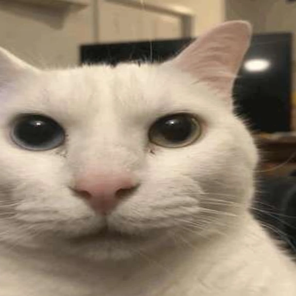

The 'Uncanny cat'
I love this cat ...
... Or car, as I will refer to him sometimes. Here's some info about him:
The premise – The funny-looking car (seen above), is known as the "Canny cat", or its opposite,
the "Uncanny cat" (try hovering or clicking the image!).
I think the image is funny because the cat is looking at the camera with a certain expression,
as if he accidentally opened the front camera on his phone.
The expression combined with memes of the aforementioned creature make it the best
meme of 2023 for me. Someone even made a
‘golf’ game about him!
Facts:
– The car's name is "Professor Jones"
– He's the cat of a Reddit user, /u/Lavonicus
– The car has a Twitter profile
here if you want to check out more images of the car.